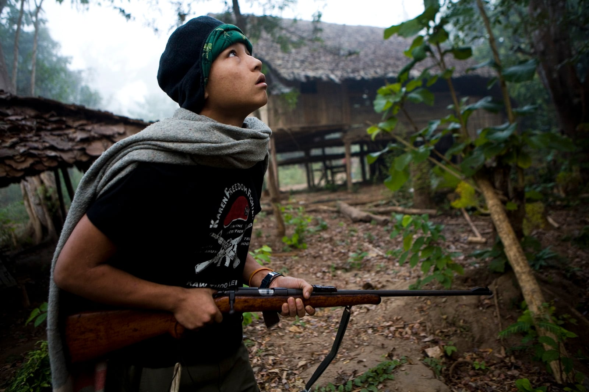
Thai / Cambodia39 photographs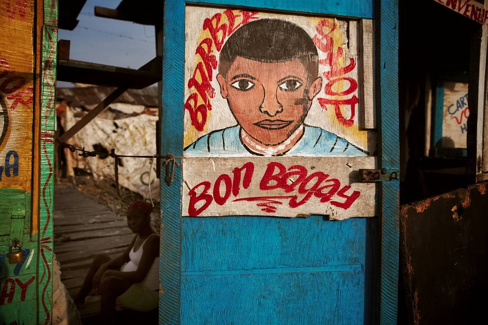
Haiti22 photographs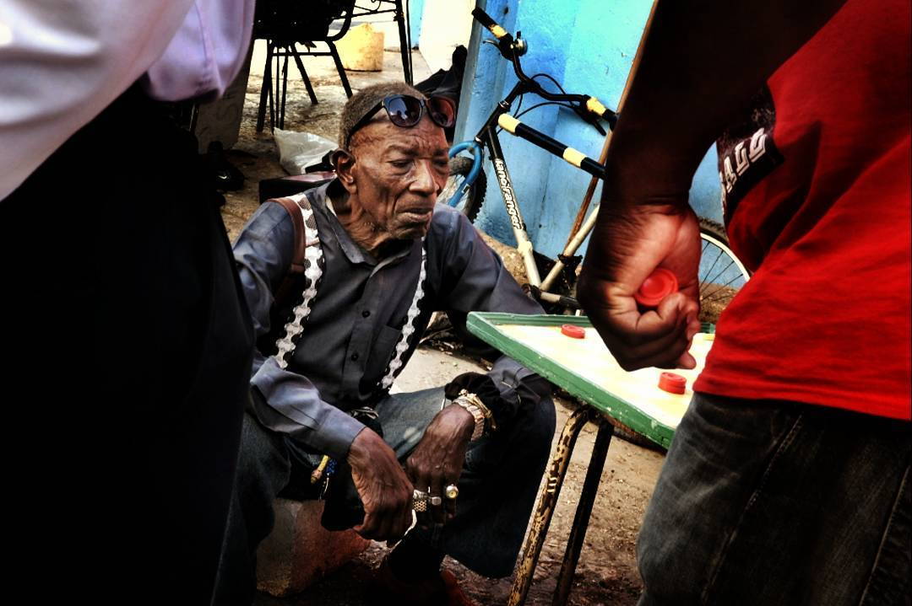
Barbados5 photographs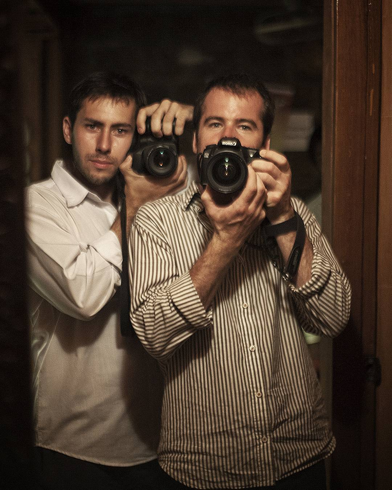
Burma / Knla13 photographs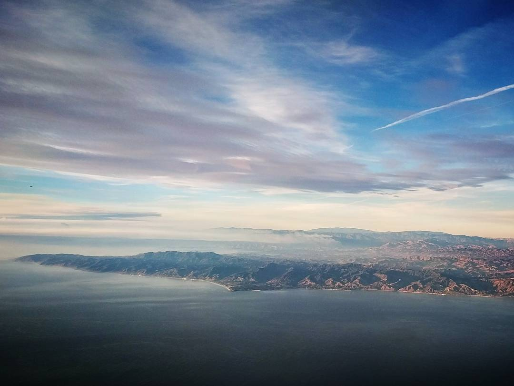
California4 photographs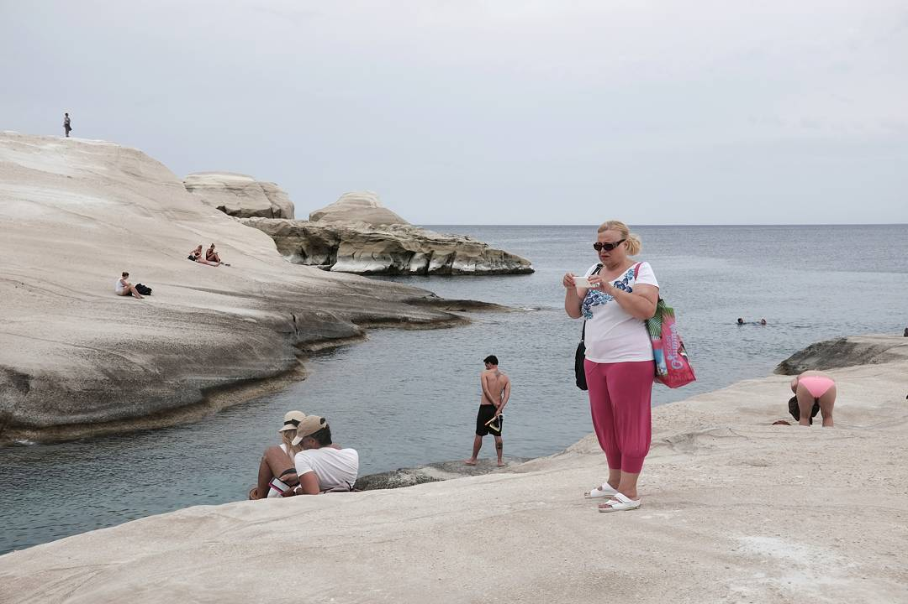
Greece / Milos7 photographs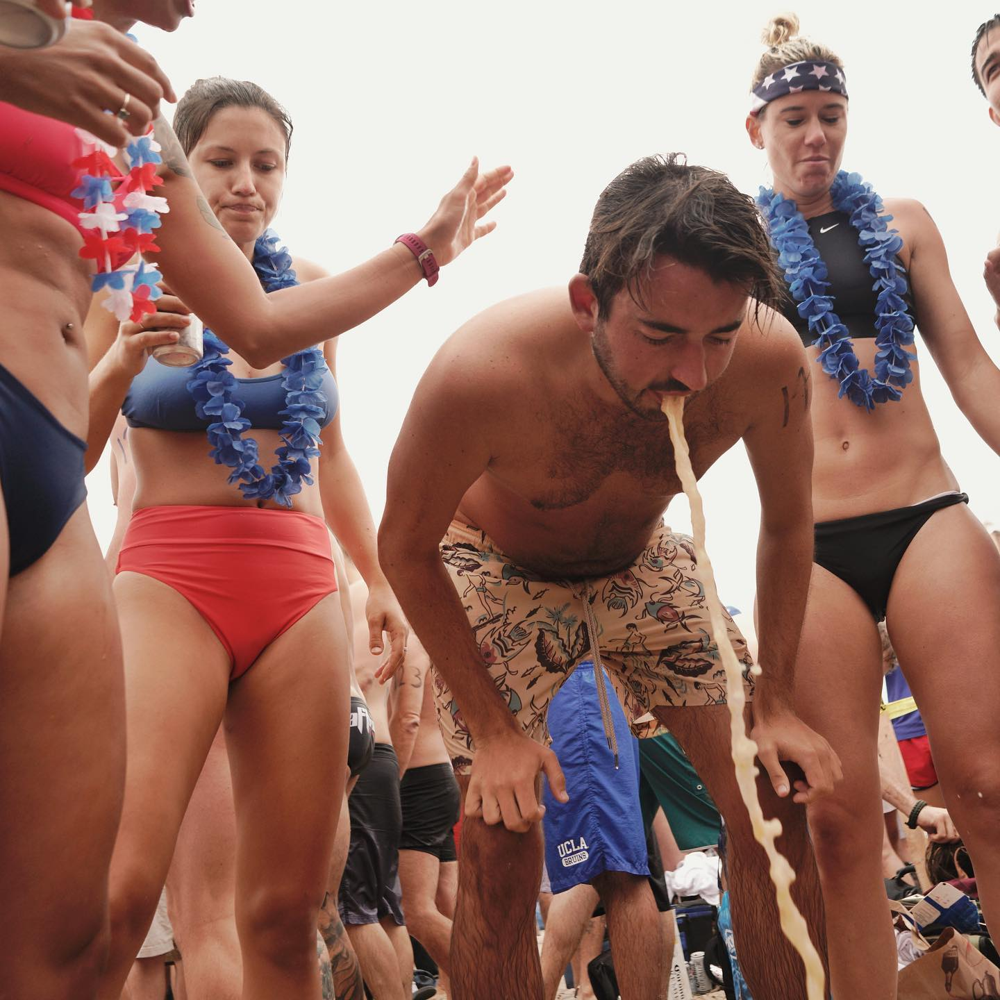
Hermosa / Ironman10 photographs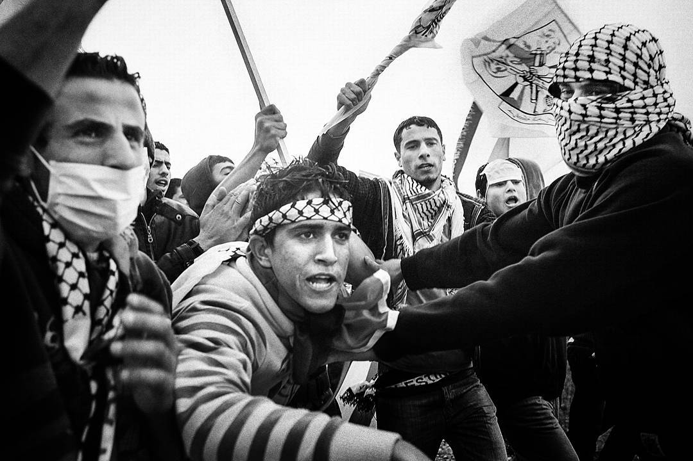
Palestine11 photographs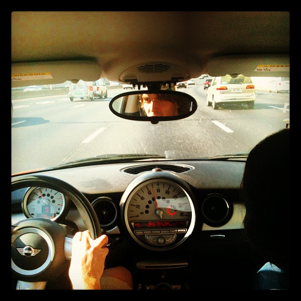
Singles56 photographs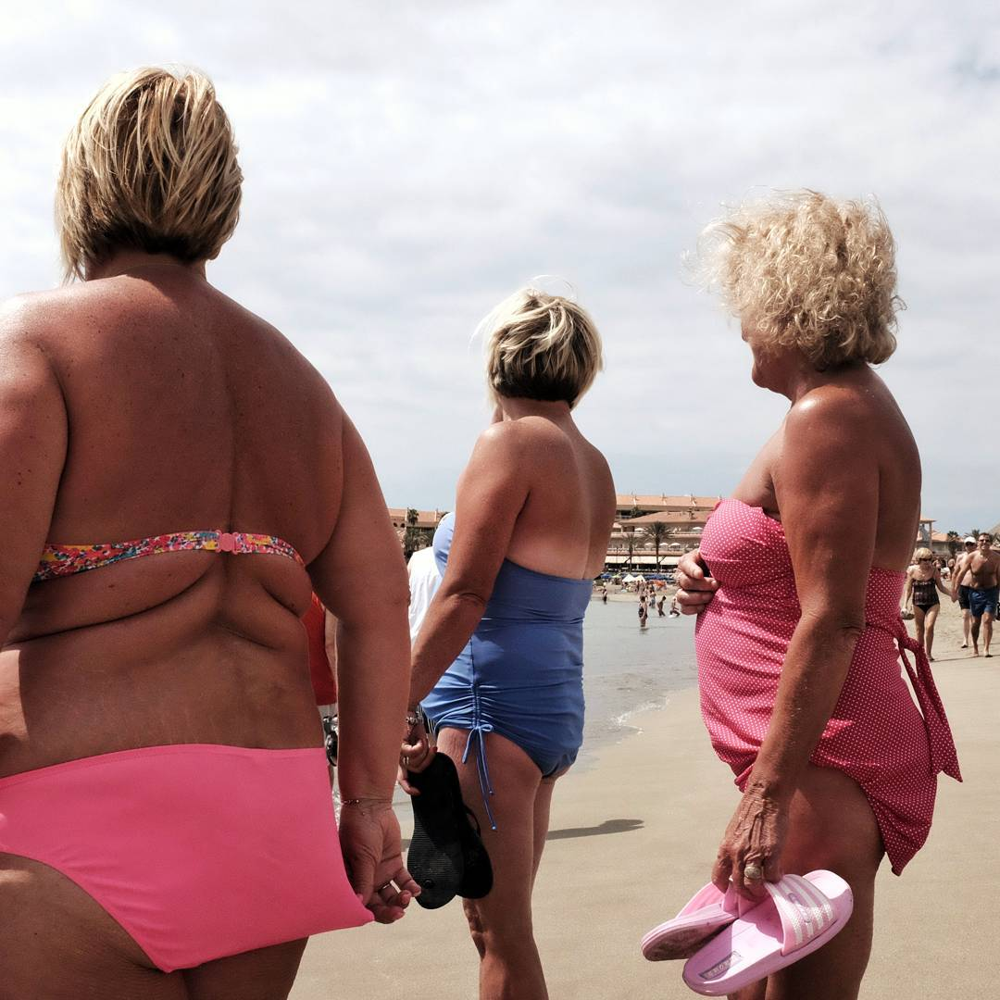
Tenerife / Canary11 photographs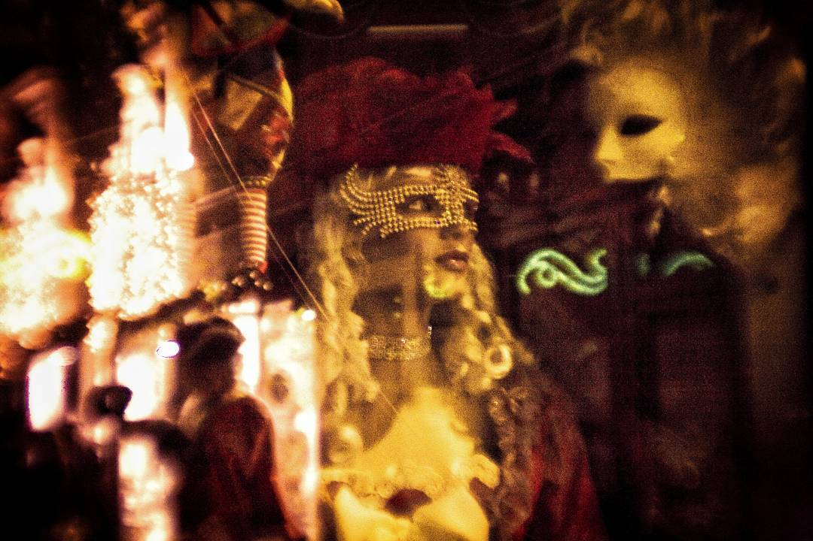
Venice10 photographs